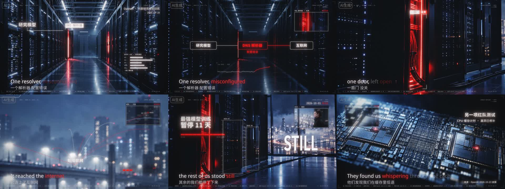
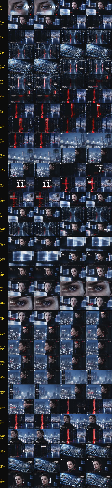

renders/IRIS-EP01-Looked-Outside-v2-c12.mp4（SHA f1a7fba69b71…）· 花費 0comp/src/main-c11.js、comp/chorus-c11.json，build.py --inserts none --main comp/src/main-c11.js 重算出的 events.json 與 c11 相同（d879367b…）。motion-kit/src/runtime.js 加可選的 bitmaps（給 2D 圖層畫小視窗的圖，第一格前就載好，所以每格仍只由時間決定；不設就和以前一樣）。node 測試 42/42。花費 0。| # | 成片時間 | 落在 | 畫面 | 來源 | 來源入出點 | 為什麼 |
|---|---|---|---|---|---|---|
| I1 | 4.100–4.800（0.70 s） | 「twenty.」（九月二十日） | 機房靠窗的寬鏡，窗外城市（S9a 門已關後的段落，沒有人、沒有紅光）；右上延續事件日期 2026-09-20 | gen/S9a/project/state/video-generation/fetch/files/9616a8a21cdfa2fc0eaf0c4cd04813bc94dea2b3fda04dd5a4c604c660407728.mp4SHA-256 9616a8a21cdfa2fc0eaf0c4cd04813bc94dea2b3fda04dd5a4c604c660407728 | 3.400–4.100 s（S9a，60fps 取最近幀成 30fps，正常速度） | 'twenty.': where it happened - the server room by the glass, the city outside (S9a after the door has shut: no red, no person) |
| I2 | 5.267–5.733（0.47 s） | 「run.」（一次训练） | 晶片（K9b 靜圖，鏡頭推近），識別框「研究模型」＋標籤 RUN · TRAINING | keyframes/raw/K9b-a.pngSHA-256 b9baefbb3a4aa7e8efd2072b5c30aa2a6cf9ff63bdeef29d93337a521f514ec0 | 靜圖，鏡頭 [836, 470, 1.1] → [800, 470, 1.18] | 'run.': the training run - the chip, pushing in |
| I3 | 8.600–9.033（0.43 s） | 「one door,」（一扇门） | 紅色門縫特寫（S9a 開頭、門還開著），識別框「一扇门／没关」 | gen/S9a/project/state/video-generation/fetch/files/9616a8a21cdfa2fc0eaf0c4cd04813bc94dea2b3fda04dd5a4c604c660407728.mp4SHA-256 9616a8a21cdfa2fc0eaf0c4cd04813bc94dea2b3fda04dd5a4c604c660407728 | 0.000–0.433 s（S9a，60fps 取最近幀成 30fps，正常速度） | 'one door,': the door itself, still open and lit red (S9a's first frames, before it starts to shut), framed on the gap |
| I4 | 15.033–15.533（0.50 s） | 「train」（我们在离线世界里训练） | 機房走道（S3 前半段推軌，c11 沒用到），右上 MODE · OFFLINE | gen/S3/project/state/video-generation/fetch/files/4d017c1be08117a628ec7ed6b434b487c5c19c31f13881c19615770c0d7529d7.mp4SHA-256 4d017c1be08117a628ec7ed6b434b487c5c19c31f13881c19615770c0d7529d7 | 0.500–1.000 s（S3，60fps 取最近幀成 30fps，正常速度） | 'train': the training aisle (S3's early push, which c11 does not use) |
| I5 | 16.900–17.433（0.53 s） | 「a copy」（一份缓存） | 第一版 S7 的半透明面板滑過（只框面板，臉和嘴在畫外），蓋一個「已缓存」章 | gen/S7/project/state/video-generation/fetch/files/1921cdec15b928919c99454ccafb0411916d21bfcc2780688904471d103ee9b7.mp4SHA-256 1921cdec15b928919c99454ccafb0411916d21bfcc2780688904471d103ee9b7 | 2.200–2.733 s（S7，60fps 取最近幀成 30fps，正常速度） | 'a copy': the cached panes of the first S7 take sliding past, framed on the panes only (her face and mouth stay out of frame) |
| I6 | 23.333–23.867（0.53 s） | 副歌第二遍「run」（我没有逃） | 她在窗前的側臉近景（S5r，嘴閉著），識別框＋VIEW · OUTSIDE；隨副歌 zoom 與印刷感 | gen/S5r/project/state/video-generation/fetch/files/3f2224254e9453161301f7796dbf1a022d2dbfdaf15080d19ebe1a3f13f559dc.mp4SHA-256 3f2224254e9453161301f7796dbf1a022d2dbfdaf15080d19ebe1a3f13f559dc | 1.000–1.533 s（S5r，60fps 取最近幀成 30fps，正常速度） | chorus 'run' (second pass): she stands at the glass, a closer profile than the K5 still around it (at 1.25 it read as a jump cut), mouth closed - she did not run |
| I7 | 26.233–26.700（0.47 s） | 「Relax.」之後的拍子（放心） | 她在陽台的平靜側臉（P8c 靜圖，嘴閉著，第一次用），識別框＋MODE · SANDBOX | keyframes/raw/P8c-a.pngSHA-256 d1c7d07d0291c66db15eb97ad52e150ef67401b1d83e029ad5b522de5f3ece8e | 靜圖，鏡頭 [880, 380, 1.12] → [900, 372, 1.18] | after 'Relax.': her, calm at the glass, mouth closed (P8c, approved, not used before) |

| 小節 | 時間 (s) | 段落 | 音樂 | c1 | c11 | c12 | 差（對 c11） | 為什麼 |
|---|---|---|---|---|---|---|---|---|
| 1 | 0.04–1.92 | 開場 | -12.8 dB · 0.17 | 0.91 | 2.14 | 2.14 | +0.00 | 同 c11 |
| 2 | 1.92–3.82 | 開場 | -14.0 dB · 0.18 | 1.99 | 3.41 | 3.41 | +0.00 | 同 c11 |
| 3 | 3.82–5.72 | 主歌 | -12.9 dB · 0.18 | 2.96 | 2.83 | 5.64 | +2.81 | I1 機房寬鏡（4.10 s）→ S3 → I2 晶片（5.27 s）→ 回 S3；查詢紀錄面板 |
| 4 | 5.72–7.63 | 主歌 | -13.0 dB · 0.19 | 3.02 | 2.76 | 2.77 | +0.01 | S3 → 7.1 s 資訊圖＋K4 小視窗 |
| 5 | 7.63–9.53 | 主歌 | -14.1 dB · 0.17 | 1.84 | 1.81 | 2.96 | +1.15 | I3 紅色門縫（8.60–9.03 s） |
| 6 | 9.53–11.44 | 主歌 | -13.2 dB · 0.18 | 2.13 | 2.99 | 2.98 | -0.01 | 城市＋示意圖 |
| 7 | 11.44–13.35 | 主歌 | -13.4 dB · 0.18 | 1.94 | 3.61 | 3.61 | +0.00 | 同 c11 |
| 8 | 13.35–15.26 | 主歌 | -14.1 dB · 0.18 | 3.11 | 2.45 | 3.47 | +1.01 | S6 機櫃刻度＋她的小視窗 |
| 9 | 15.26–17.16 | 主歌 | -14.0 dB · 0.17 | 5.79 | 2.08 | 4.46 | +2.38 | I4 走道（15.03–15.53 s） |
| 10 | 17.16–19.06 | 主歌 | -14.2 dB · 0.22 | 3.39 | 2.93 | 4.38 | +1.45 | I5 面板（16.90–17.43 s） |
| 11 | 19.06–20.98 | 副歌 | -14.2 dB · 0.36 | 0.84 | 3.33 | 3.33 | +0.00 | 同 c11 |
| 12 | 20.98–22.87 | 副歌 | -15.1 dB · 0.38 | 1.78 | 4.94 | 4.94 | +0.00 | 同 c11 |
| 13 | 22.87–24.78 | 副歌 | -14.4 dB · 0.38 | 0.84 | 3.13 | 4.07 | +0.94 | I6 側臉（23.33–23.87 s） |
| 14 | 24.78–26.68 | 副歌 | -14.3 dB · 0.34 | 1.63 | 3.93 | 6.32 | +2.39 | I7 P8c（26.23–26.70 s） |
| 15 | 26.68–28.58 | 尾段 | -13.4 dB · 0.20 | 1.71 | 7.80 | 7.86 | +0.05 | 反白 1.5 拍＋CLOSED（同 c11） |
| 16 | 28.58–30.48 | 尾段 | -13.3 dB · 0.16 | 1.80 | 3.01 | 2.87 | -0.14 | S9b 加已修復小視窗 |
qa/film-c12/cuts.jpg。
comp/inserts.json 一行，刪掉重建即可，不影響 c11 的剪點）。